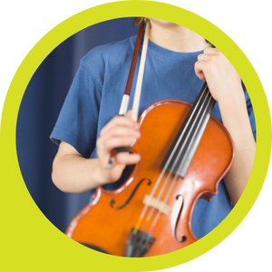
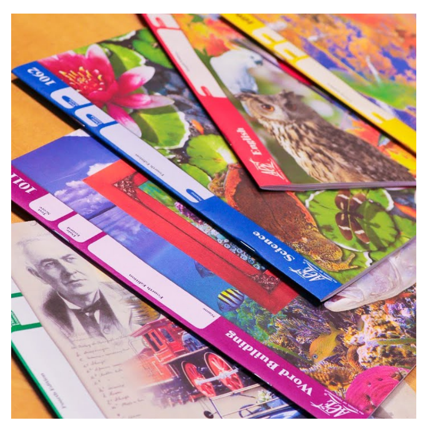
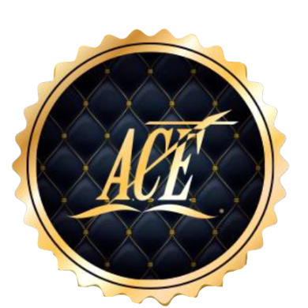

Math, Animal Science, Word Building, Social Studies (Primer nivel en español, segundo nivel en inglés)

Math, English, Science, Social Studies, Word Building, Español
Algebra, Geometry, Trigonometry, English, Biology, Physical Science, Chemistry, World Geography, World History, American History, New Testament Survey, Life of Christ
Speech, Health, Music, Fine Arts, Business
Finanzas, Dibujo, Música, Conversation, Historia, Geografía, Francés, Computación, Tejido, Corte y Confección
Readmaster, Typemaster, Mathbuilder, Wordbuilder
Plataforma de aprendizaje en línea
Cada alumno es colocado en un nivel académico acorde a su conocimiento, permitiéndole avanzar a su propio ritmo.
Romanos 12:5-6
Cada alumno establece metas razonables y alcanzables que fortalecen su sentido de logro.
Lucas 14:28
Se fomenta el ánimo, la responsabilidad y el desarrollo del carácter cristiano.
Colosenses 3:23
Proverbios 22:6
El aprendizaje es medible para asegurar la adquisición real del conocimiento.
Lucas 12:48
Cada estudiante recibe reconocimiento por su esfuerzo y dedicación.
Filipenses 3:13-14
El exitoso programa Accelerated Christian Education (A.C.E) es un sistema educativo único que ofrece a los estudiantes la oportunidad de aprender a su propio ritmo
Los alumnos son guiados por excelentes materiales completamente en idioma inglés de aprendizaje basados en la Biblia.
Es un programa educativo completo desde Kindergarten hasta High School, el cual ofrece la clave para la excelencia académica y el desarrollo del carácter (corazón) del alumno basado en la Biblia.

Este sistema de aprendizaje ha demostrado su eficacia en la vida de los estudiantes durante más de 50 años en 145 países alrededor del mundo.

Anualmente A.C.E. México entrega reconocimientos de Escuela de Calidad y Escuela Modelo a todas aquellas escuelas que reúnen los requisitos. La obtención del reconocimiento es un tributo al hecho de que el personal de la escuela está motivando de manera efectiva a los estudiantes, sigue los procedimientos del manual de A.C.E. y se mantiene operando una escuela cristiana de alto nivel.
Nuestra escuela lleva siendo de Calidad desde el año 2019 hasta el año presente.
Cuando el alumno inicia con los PACEs 1097 deberá inscribirse a Lighthouse Christian Academy, institución que otorga el certificado apostillado de nivel Preparatoria (High School), con validez oficial y aceptado en universidades a nivel mundial.